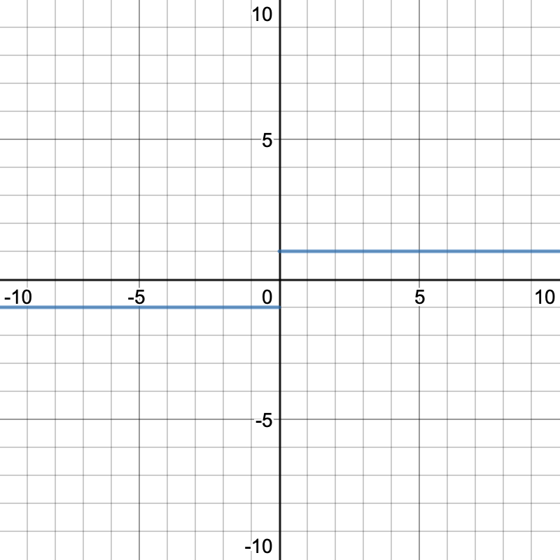
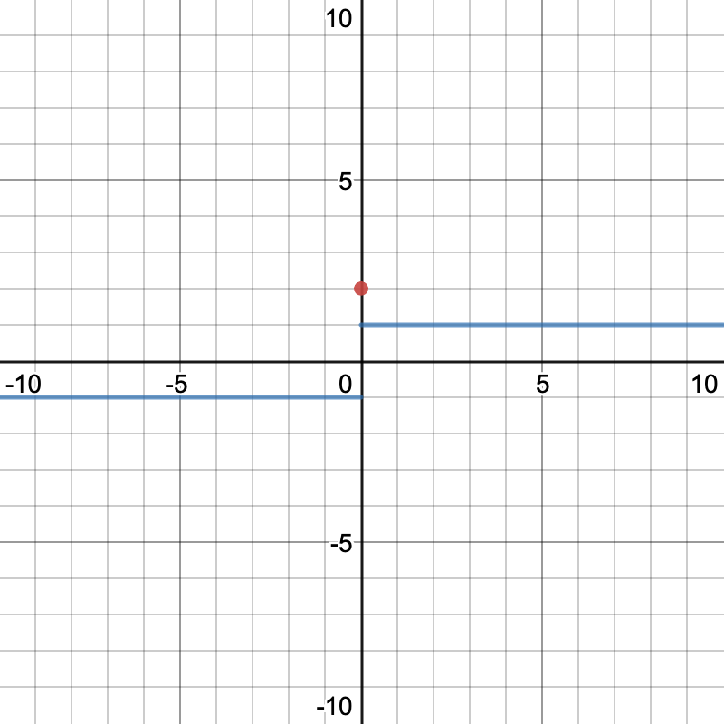
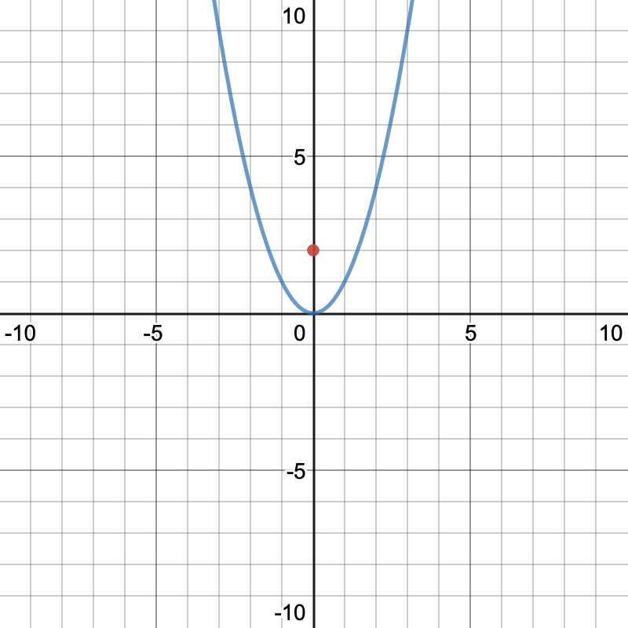

By:Mohammad-Ali Bandzar | Nov 1 2019
Sometimes we can’t find solutions to math problems because a solution either doesn’t exist (is indeterminate) but we can find a solution incredibly close from both sides and can see what our solution would be if it were to exist. Other times the limit of a point can exist but may not equal the function value at that point i.e loading.... Another use case for limits is to determine end behavior at a function(limits at infinity) but thats beyond the scope of this article. A good example use case for limits is: loading... when graphed it would look like a perfectly straight line right? But let’s say we were tasked with finding what x=0 was, if we were to plug in zero into our equation we would get loading... but therein lies our problem, a solution does not exist because zero is not in the domain of our function, loading... is considered the indeterminate form. Through the use of a graph, we can kind of guess that the value is going to be zero, but that isnt good enough for us(or viable on a test).
The way that limits would approach our aforementioned problem is it would look at numbers very close to our desired one, which is zero in this case and would make the assumption that whatever our very close numbers were going toward or approaching Is the solution to our problem. So for our aforementioned question we could plug in 0.0001 to give us loading... we could plug in smaller numbers closer to zero and we would see that our equation was approaching zero as x approached zero from the right, which could be written as loading...(the plus means we are aproaching our limit from the right and are trying numbers greater than our desired one). We could then solve for our limit from the left by plugging in very small numbers less than our desired number such as -0.0001 and we would see that our limit as x approaches zero from the right is also zero which can be written as loading.... Because the left and right limit approach the same value we can then merge these limits to conclude loading.... Now although we can never claim to know the value of x=0 for this equation, we can say that as we approach zero from both sides the limit is zero. For a solution to a limit problem to exist, direct substitution must lead to the indeterminate form of loading...
A limit from the left is written in the general form: loading... notice the "negative" exponent on the value we are aproaching, that means that we only want to aproach a from the left and that we will only test x values that are less than but very close to a.
a very popular example of this is loading
our limit loading
but our two sided limit does not exist, i will explain why below
A limit from the left is written in the general form: loading... notice the "positive" exponent on the value we are aproaching, that means that we only want to aproach a from the right and that we will only test x values that are greater than but very close to a.
Continuing our example from above our right sided limit would be loading...
we can only say that the two sided limit exists if both one sided limits exist and are equal to each other, that is:loading....
continuing our example from before, we can say that loading... does not exist because loading... which can be visualized better with a graph

Many different aproaches exist for solving limits, when i was in highschool i used a scientific calculator to plug in really close numbers from both sides to determine the limit, but that isnt a "valid" aproach according to most teachers, but is still a completely valid way of validating your solutions
Sometimes you can directly plug your number into the equation and get a result, beware that if this value is on the very edge of your domain there maybe no solution to your limit.
for example let loading...
if we were to try and solve through direct substitition we would get zero, but some may argue that the limit does not exist as we cannot solve for a limit from the left as the function is not define for any number to the left of(less than) zero. you should definately clairify with your instructor about this
Anouther common issue with this method is when you plug into a function that looks like the following: 
the issue here is that the limit does not exist as x aproaches zero but f(0)=2 so if you were to just plug in without verifying your solution you can get limits that dont exist or are incorrect.
OR.
Here, the limit does exist, but just pluging in would give you the wrong answer.
This is the most common method it involves essentially removing the hole from the equation then directly substituting the value, a simple example of this is loading... if we factor the binomial we get loading... we can then “cancel out” loading... from both our numerator and denominator to get loading... from there we can directly substitute to get the solution to our limit which is -6
Sometimes you will get a question such as loading... and and you want to solve for the limit as x approaches 9 so you can multiple by the cojgare divided by itself( which is essentially multiplying by one, to get loading...) which simplifies to we can then “cross out” the common factor to get loading... we can then substitute in the 9 to get loading... as our limit.
These limits are only tested from one side and can only have one of 3 possible values,
loading... this one is fairly easy because the bigger x we plug in we can see that x squared goes bigger, so we can say that loading...
loading... this one is fairly easy because we can just plug in: loading...
loading... this one does not exist because the two one sided limits are not equal. from the left its negative one, from the right its positive one.
loading... this limit does not exist because it is a vertical asymptote. the missing value is impossible to factor out and direct substitution gives us loading... which is not the indeterminate form and will always be a vertical asymptote.
loading... this limit does not exist because it is a vertical asymptote. the missing value is impossible to factor out and direct substitution gives us loading... which is not the indeterminate form and will always be a vertical asymptote.
loading... as x is going toward negative infinity we can restrict our domain to x<0 and rewrite this as loading... from here it should be fairly clear to you that one divided by a constantly increasing number will be zero. another way to look at it would be loading... which isnt technically mathamatically correct but should make it more clear to you about why our solution is zero.
loading... This one starts with us pulling the common factor out of our numerator: loading... From there we can factor the numberator: loading... from there we can cross out the common factor loading... to get our final solution: loading...=-12
using your new found knowledge of limits you can now tell your friends you can solve loading...(sort of) by defining a function loading... we can then take the limit of that as x aproaches zero loading... which is one.
THANKS FOR READING